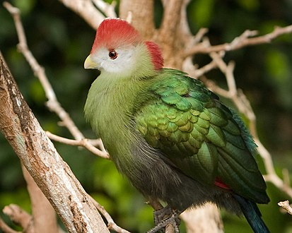

Краснохохлый турако – единственная птица, в чьем окрасе присутствуют настоящие красный и зеленый цвета. Когда мы смотрим на большинство птиц, то цвет, который мы видим, является результатом отражения структуры пера ( больше фото можно посмотреть тут ). Пигменты, которые окрашивают перья краснохохлого турако (красный пигмент турацин и зеленый тураковердин), содержат медь. И действительно, если опустить красное перо в стакан с водой, то вода окрасится в розовый цвет.
Перья краснохохлых турако, которые уже успели стать музейными экспонатами, со временем приобретают более глубокую окраску, поскольку медь начинает окисляться.
Краснохохлые турако получили свое название благодаря красивому гребню длиной около пяти сантиметров, который принимает вертикальное положение, когда птицы чем-то возбуждены, например, во время брачного периода. Больше об этих птицах можно прочитать тут.